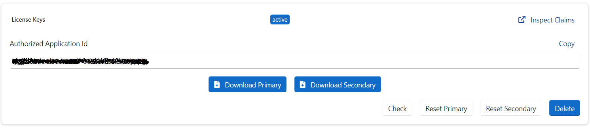

License Keys
The license keys authorize your use of the OneImlx.Terminal framework against a valid license. The keys are signed JWT assertions with header, payload, and signature.
The license keys are associated with your tenant account and an active subscription for the OneImlx.Terminal framework.
For each subscription, our system generates two keys. The two keys allow you to replace one while still using the other.
- Primary License Key
- Secondary License Key
The license keys are public signed keys with a public-private key pair. They do not grant any permissions such as creating, deleting, or modifying your data. You can use the license keys in your public CLI terminals, and we use them only to check the license claims.
The license keys are not API keys or access_tokens.
For more information, see JWT.
License Audience Claims
The mandatory license audience claims to identify the valid license holder for the OneImlx.Terminal framework.
audclaim identifies the recipients of the license keys. It is usually the person's name, organization or business name, or an educational institute name.subjectclaim identifies your subscription identifiertidclaim identifies your consumer tenant identifiertenant_ctryclaim identifies your consumer tenant country
Note: Do not specify any sensitive information such as a secret, api keys, etc., in your license audience claims.
Generate
You will need an active OneImlx.Terminal subscription to generate the license keys. If you do not have an active subscription, please visit buying.
- Go to our Consumer Portal
Loginto your account- Browse
Subscriptions.
- Select and open the subscription for which you want to generate the license keys
- Scroll down to the
License Keyssection
- Select
Generate - Specify your usage and license audience claims.

- Click
Generate
Note: The license expiry is based on your subscription plan. It is
31days for monthly subscriptions,365days for yearly subscriptions, and90days for community subscriptions. See https://github.com/perpetualintelligence/terminal/issues/20.
Download
You can download your license keys with Download Primary or Download Secondary actions.

The downloaded file is a JSON file with license audience claims and licenses keys. See usage to configure your terminal.Check
You can check your license key with our Check license feature.
- Select
Check - Select
PrimaryorSecondarylicense keys
- Click
Checkbutton - Please allow a few seconds to check and present your license key status
Reset
The reset allows you to regenerate primary or secondary keys and replace them in your application based on your deployment strategy while still using the other key.
- Select one of the
Reset PrimaryorReset Secondaryoptions - Confirm you license audience claims

- Click
Reset PrimaryorReset Secondarybutton - Please allow a few seconds to reset your license key
Note: You cannot update your license audience claims during reset. You need to delete the license keys and generate new keys to change your license audience claims.
Currently, Reset will require redeploying your terminal. The fix is in progress, and it will enable customers to reset license keys without redeploying their terminals. See GitHub issue https://github.com/perpetualintelligence/terminal/issues/22 that tracks this issue.
Delete
The Delete action will permanently remove your Primary and Secondary license keys. YOU CAN NOT UNDO THIS ACTION.
Note: Deleting your keys will affect your deployed terminals. The license check will fail, and the application will not start till you generate the keys and update your application configuration to you use the new keys.
See GitHub issue https://github.com/perpetualintelligence/terminal/issues/21 that will show a warning message before deleting.